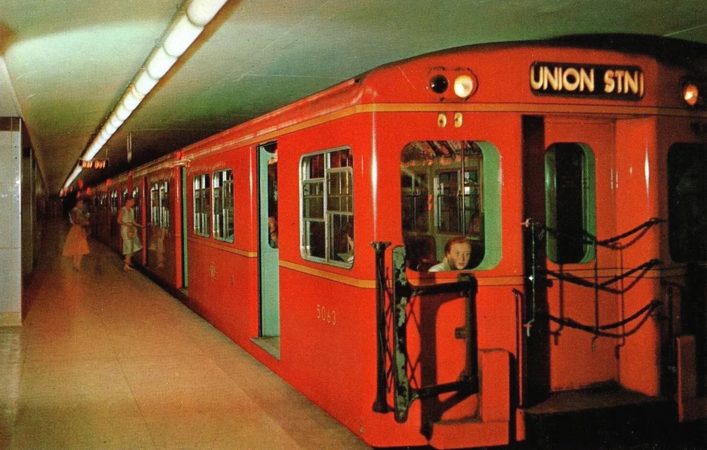

Signal
SignalTransit dashboard / Station atlas
Toronto transit history
Station atlas.
Follow Toronto’s rail network from the first Yonge subway to the Eglinton and Finch West lines. Choose a station to explore its history.
109 operating locations7 historical records

.jpg){kind=link}
Find a station
Operating stations and stops
- Aga Khan Park & Museum
- Albion
- Avenue
- Bathurst
- Bay
- Bayview
- Bessarion
- Birchmount
- Bloor-Yonge
- Broadview
- Caledonia
- Castle Frank
- Cedarvale
- Chaplin
- Chester
- Christie
- College
- Coxwell
- Davisville
- Don Mills
- Don Valley
- Donlands
- Downsview Park
- Driftwood
- Dufferin
- Duncanwoods
- Dundas West
- Dupont
- Eglinton
- Emery
- Fairbank
- Finch
- Finch West
- Forest Hill
- Glencairn
- Golden Mile
- Greenwood
- Hakimi Lebovic
- High Park
- Highway 407
- Humber College
- Ionview
- Islington
- Jane
- Jane and Finch
- Keele
- Keelesdale
- Kennedy
- King
- Kipling
- Laird
- Lansdowne
- Lawrence
- Lawrence West
- Leaside
- Leslie
- Main Street
- Martin Grove
- Milvan Rumike
- Mount Dennis
- Mount Olive
- Mount Pleasant
- Museum
- Norfinch Oakdale
- North York Centre
- Oakwood
- O'Connor
- Old Mill
- Osgoode
- Ossington
- Pape
- Pearldale
- Pharmacy
- Pioneer Village
- Queen
- Queen’s Park
- Rosedale
- Rowntree Mills
- Royal York
- Runnymede
- Sentinel
- Sheppard West
- Sheppard-Yonge
- Sherbourne
- Signet Arrow
- Sloane
- Spadina
- St Andrew
- St Clair
- St Clair West
- St George
- St Patrick
- Stevenson
- Summerhill
- Sunnybrook Park
- TMU
- Tobermory
- Union
- Vaughan Metropolitan Centre
- Victoria Park
- Warden
- Wellesley
- Westmore
- Wilson
- Woodbine
- Wynford
- York Mills
- York University
- Yorkdale